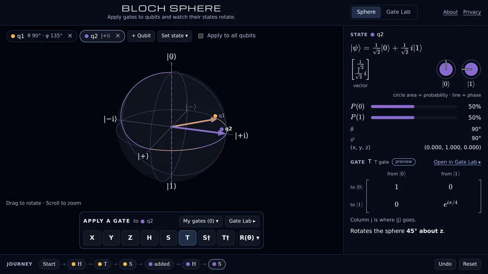

Bloch Sphere
An interactive Bloch sphere for students meeting quantum computing for the first time. Apply gates to qubits and watch their states rotate, see every state and gate as exact numbers, and build your own gates in the Gate Lab.
TypeScript, React, three.js · Source on GitHub